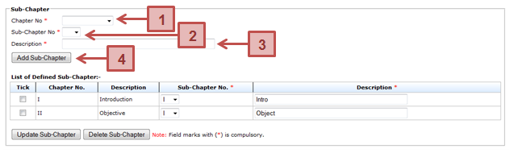

Prerequisite
The thesis chapter has been created
Steps
Next Action
The student can proceed with the submission of the monthly progress report to the Supervisor.
Warning
System will prompt a notification message if the addition of the thesis sub-chapter without selecting the chapter number, providing the sub-chapter number and its description.
Note
None
Created with the Personal Edition of HelpNDoc: Produce Kindle eBooks easily